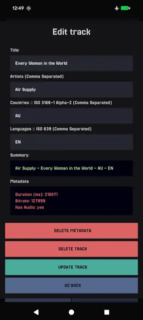

Tūī
صوت وفيديو وموسيقى
Built entirely in native Kotlin, Tui runs fully on-device, avoids tracking and no internet access.
✓ ترخيص مفتوح (GPL-3.0-or-later) · آخر تحديث: 2026-08-26
2026.13الإصدار
1.2 MBالحجم
GPL-3.0-or-laterالرخصة
Open in Kanzتحميل APK (1.2 MB)
Download APK
SHA-256: 7ce6c0ae8f0ffa697846ac1d320dafd07e3d515ab84cd38e620de8c87ffe7cca

تطبيقات تانية لنفس المطوّر (5)
More apps from this developer: com.rama
امسح الكود لفتح صفحة التطبيق
Scan to open this app page
لو كنز مش متثبت عندك: نزّل متجر كنز.
Not installed? Get the Kanz store.